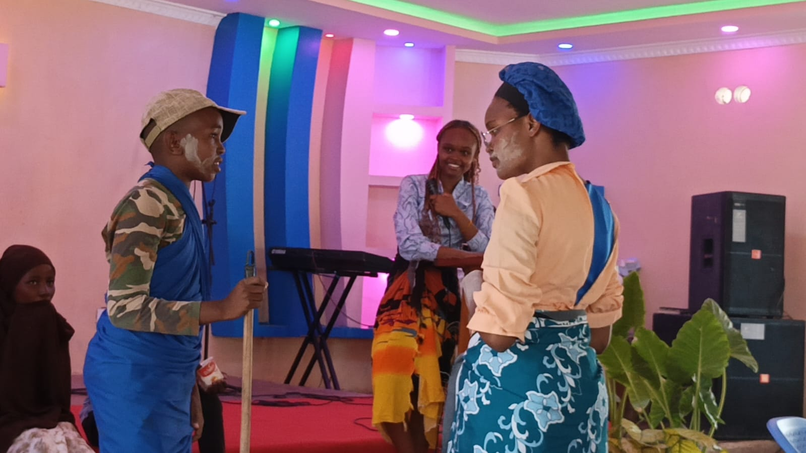
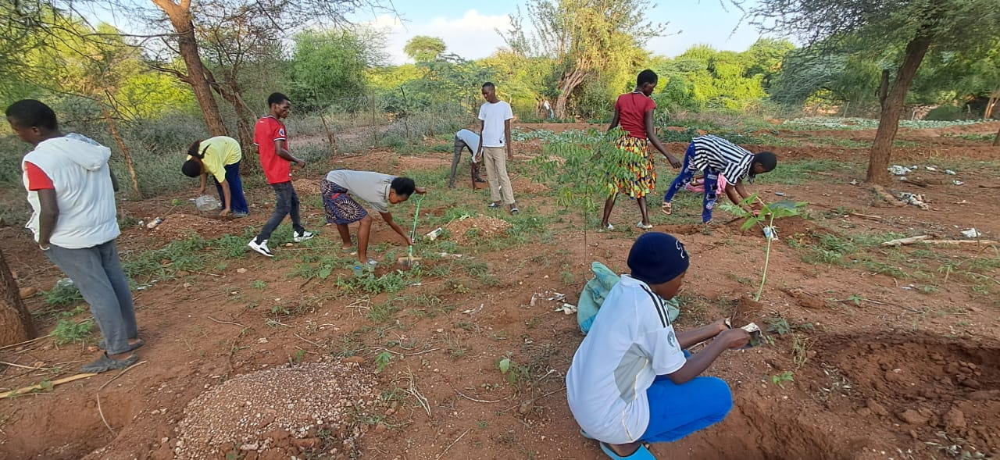

Academic Training
Academic Training
Program 01
Practical support for real academic success
Many bright learners struggle not because they lack ability, but because no one has shown them how to study well. Our Academic Training program closes that gap — building strong habits, real content mastery, and the confidence to walk into any exam room prepared.
Through small-group coaching, peer study circles and one-on-one check-ins, learners work through problem-based learning (PBL) that mirrors how they'll actually be tested — not just rote memorisation. Mentors track each learner's progress across a full term, adjusting support as strengths and gaps become clear.
- Small-group coaching and one-on-one tutoring
- Problem-based learning and curriculum mastery
- Study planning, revision techniques and exam readiness
- Termly progress tracking with mentors and parents

Talent DevelopmentProgram 02
Nurturing the gift that's already there
Talent left undiscovered is a star that never gets to shine. This program gives young people in music, art, sport and leadership a real stage — and the mentorship to turn raw promise into skill.
Participants join skill-building workshops led by working artists and coaches, then move into showcases and community performances where their work is seen and celebrated. For many, it's the first time their talent has been treated as something worth investing in.
- Skill-building workshops with experienced mentors
- Showcases, events and community performances
- Practical support for talent discovery and growth
- Pathways to regional and national opportunities
 STEM Engagement
STEM Engagement
Program 03
Hands-on science for future innovators
Curiosity fades fast when science stays stuck in a textbook. Our STEM Engagement program puts real tools in learners' hands so science, technology, engineering and math feel like something they can build with, not just study.
Learners work through interactive experiments and innovation challenges in small teams, guided by mentors who help them connect classroom concepts to real careers. The goal isn't just better grades — it's a lasting habit of problem-solving and a genuine sense of what's possible.
- Interactive science and technology workshops
- Project-based learning and innovation challenges
- Mentorship for STEM pathways and career awareness
- Access to shared tools, kits and lab time

Community OutreachProgram 04
Youth-led change, right where they live
Leadership is best learned by doing. Community Outreach puts young people in charge of real service projects in their own neighbourhoods — turning classroom values into visible, lasting impact.
Teams plan and run clean-up drives, awareness campaigns and support initiatives for vulnerable households, working alongside local leaders. Along the way, participants build the civic confidence and collaboration skills that carry into every part of their lives.
- Community service projects and campaigns
- Youth leadership and civic engagement
- Practical support for community resilience
- Partnerships with local leaders and organisations
Know a Young Person
Ready To Rise?
Refer a learner, volunteer your time, or partner with us to grow these programs further.